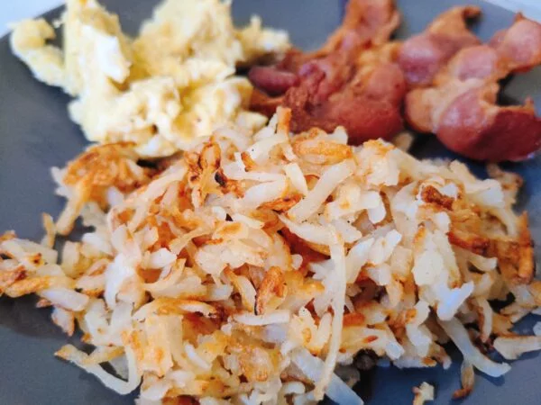

Hashbrowns

Ingredients
- 2 peeled potatoes
- 3 tablespoons of butter
- Salt and ground pepper to taste
Steps
- Shred potatoes into a large bowl filled with cold water. Stir until water is cloudy, drain, and cover potatoes again with fresh cold water. Stir again to dissolve excess starch. Drain potatoes well, pat dry with paper towels, and squeeze out any excess moisture.
- Heat clarified butter in a large non-stick pan over medium heat. Sprinkle shredded potatoes into the hot butter and season with salt, black pepper, cayenne pepper, and paprika.
- Cook potatoes until a brown crust forms on the bottom, about 5 minutes. Continue to cook and stir until potatoes are browned all over, about 5 more minutes.